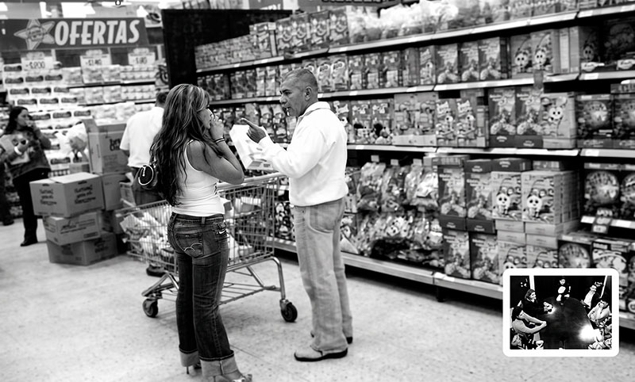

Sesiones de grupo- Observación
- Grabación en vídeo
- Entrevistas
Soluciones robustas que contemplan informaciones de diversas fuentes permiten una comprensión profunda de las dinámicas de compra que se generan en el punto de venta. Nos enfocamos en los canales de venta de interés de nuestros clientes, tanto los tradicionales como las grandes cadenas de retail.